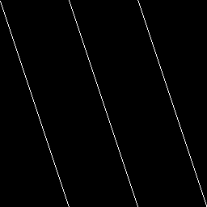

Fred's game tech articles (title pending)
Musings about reverse engineering, retro game archeology and speedrun research
Pseudo-Random Number Generators
Last edited on: 2020-04-11
Randomness in games is an important part of making every playthrough different and keeping the player on their toes. But where does it come from? Here we'll look at some algorithms games employ to create randomness.
I will say up-front that I am in no way an expert on randomness, I have just stumbled upon the subject many times while researching games for speedrun and TAS purposes. With that out of the way, let's get to it!
The below images are made by generating a pair of random numbers from the PRNG in question, and using them as coordinates into a black image. The brightness is then increased at the selected coordinate, until a pixel that is max white would get hit again.
Capcom's early PRNG on the SNES
Capcom games on the snes started out with a LCG random number generator with m=216, c=0.
Nothing fancy, but it gets the job done. Notice the uniform diagonal patterns in the generated image.
u16 prng_state = 0x01C3 u8 Get_prng_value() { rng_state *= 259 return rng_state >> 8 } Iterations before pixel brightness overflow: 2088960
Games known to use this prng:
- Super Ghouls 'n Ghosts (1991-10-04)
Notes:
Called on demand only.
Used heavily in stage 1, which will "seed" the state. - The Magical Quest Starring Mickey Mouse (1992-11-20)
Notes:
Called on demand only.
No attempts at seeding the state.
Resets the state at every new stage. - Aladdin (1993-11-21)
Notes:
Called on demand only.
Frequent prng usage early to "seed" the state.
Dying resets the state.
Capcom's broken PRNG!
At some point, Capcom decided to switch up their PRNG algorithm, but something clearly went wrong here!
u16 prng_state = 0x01C3
u8 Get_prng_value()
{
x = (rng_state * 3) & 0xFF00
rng_state = x | u8((x >> 8) + rng_state)
return rng_state >> 8
}
Iterations before pixel brightness overflow: 115894
Games known to use this prng:
- Goof Troop (1993-07-11)
Notes:
Called on demand only.
Capcom's fixed PRNG
Luckily Capcom realized something wasn't quite right. They were using the wrong part of the rng state as the return value! The initial state was also changed. The generated image has much less apparent symmetry compared to the earlier LCG!
u16 prng_state = 0x0D37
u8 Get_prng_value()
{
x = (rng_state * 3) & 0xFF00
rng_state = x | u8((x >> 8) + rng_state)
return rng_state
}
Iterations before pixel brightness overflow: 5550585
Games known to use this prng:
- Demon's Crest (1994-10-21)
Notes:
Called every frame and on demand. - Mega Man X3 (1995-12-01)
Notes:
Called every frame and on demand.